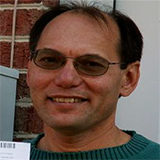

<main class="content" id="genesis-content">
  <article class="post-1243 page type-page status-publish entry" itemscope="" itemtype="https://schema.org/CreativeWork">
  <header class="entry-header">
    <h1 class="entry-title" itemprop="headline">Mission</h1>
  </header>
  <div class="entry-content" itemprop="text">
    <h1 style="text-align: center;"><span style="color: #000000;">Our Mission</span></h1>
    <p><span style="color: #000000;">Empower individuals and communities to improve health and resilience by:</span></p>
    <ul>
      <li><span style="color: #000000;">Developing a <strong>permaculture</strong> demonstration site</span></li>
      <li><span style="color: #000000;">Delivering <strong>permaculture</strong> training</span></li>
      <li><span style="color: #000000;">Hosting events to promote <strong>permaculture</strong> and its benefits</span></li>
      <li><span style="color: #000000;">Fostering a co-operative, self-reliant learning community</span></li>
    </ul>
    <p>
      
    </p>
    <p style="text-align: center;"><strong><span style="color: #000000;">David Bolt</span></strong></p>
    <p><span style="color: #000000;">
      ETPRI Board Chair David Bolt has reached this point after a 30–year career,
      first in software development and later in solar energy installation.
      In 1996 David co-founded MarketLinx, a company that created the first Internet based
      Multiple Listing system and grew to controlling a 25% national market share in 2003
      when the company was purchased by First American.
    </span></p>
    <p>&nbsp;</p>
    <p>
      
      </p>
      <p><span style="color: #000000;">Jim Gray</span></p>
      <p><span style="color: #000000;">
        Jim Gray has often been invited to join the Boards of non-profit organizations.
        He currently serves on the Board of the Foundation for Global Sustainability
        and recently was Board Chair of SEEED (Socially Equal Energy Efficient Development).
        He’s also served on the Executive Committee of the Sierra Club group in Knoxville.
        Jim is a co-founder and Executive Director of the East Tennessee Permaculture Research Institute.
      </span></p>
    </div>
  </article>
</main>
